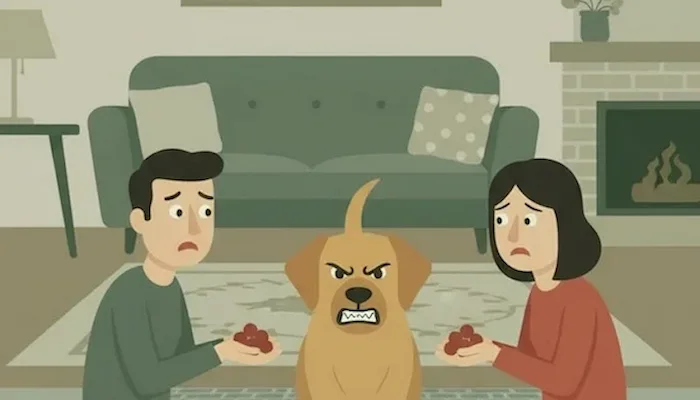

Eksperter peger på de sociale medier som den egentlige udløser.
Antallet af opslag med teksten “Med min bestie” er eksploderet,
mens hundeopslag i stigende grad handler om æstetik – matchende
outfits, filtre og virale tricks – snarere end ægte samvær.
Se mere
Hunde, viser det sig, har bemærket det.
I en nylig (og fuldstændig opdigtet) undersøgelse sagde 74% af
danske hunde, at de følte sig “følelsesmæssigt tilsidesat” af
deres ejeres menneskelige venskaber.
Yderligere 12% overvejede “at flytte hjem til mormor.”
Kalder alle hundehviskere
Danmark står midt i en hundekrise og situationens alvor kræver at
vi indsætter flere hundehviskere. Hvis du er hundehvisker eller
har en forkærlighed for at tyde deres tegn, så kontakt os gerne
eller meld dig til vores kursus herunder:
Se mere
Tilliden er brudt, og venskabet hænger i en tynd snor. Derfor
har vi brug for DIG — mennesket, der kan forstå et blik, før
det bliver til et bjæf.
Bliv en del af Operation Hent Tilliden Tilbage og hjælp os med
at genoprette det ældste partnerskab i historien: menneske og
hund.
Ingen erfaring kræves for at deltage i vores kurser — kun et
åbent hjerte, rolige hænder og en pose godbidder.
Noget mærkeligt sker i disse tider i danske hjem...
Hundenes talsperson forklarer
"Dette kræver vi af jer mennesker..."
Sådan vinder du din hund tilbage
At genoprette forholdet kræver både ydmyghed og handling...
Danmarks hunde har fået nok!
Noget mærkeligt sker i disse tider i danske hjem. Engang loyale hunde –
vores løbepartnere, sofakammerater og krummeredningsmænd – er begyndt at
gøre stille, men tydeligt oprør. Skålene står urørte, snorene bliver
ignoreret, og yndlingsboldene ligger forladt i hjørnet. Årsagen? Sårede
følelser.
Ifølge den nystiftede (og ganske fiktive) Danske Hundekoalition har
hunde over hele landet opdaget, at mennesker i stigende grad kalder
andre mennesker deres “bedste venner”. For hundene føles det som et
svigt. “I generationer har vi været de bedste venner,” udtaler
talshunden Freja, en beagle fra Fyn. “Nu slynger de det ud til hvem som
helst – som et gammelt tyggeben.”
Ekstremt hurtig udvikling
Fænomenet har taget fart. Der er rapporter om organiserede
hunde-“strejker” fra Aarhus til Aalborg. Naboers hunde er blevet set i
flokke i parker, hvor de nægter at hente pinde eller rulle rundt for
ejere, der nogensinde har sagt “min bedste ven” om et menneske.
En sprogforsker fra Københavns Universitet (som ønsker at være anonym af
hensyn til sin terrier) forklarer: “Ord former relationer. Når vi
degraderer hunde fra ‘bedste ven’ til ‘kæledyr’, ændrer vi hele den
sociale kontrakt.” Kort sagt: Ord betyder noget. Især når den, der
lytter, har tænder.
Hundenes talsperson forklarer
Midt i det landsdækkende hundeoprør – hvor hunde i protest nægter at
hente bolde, fører snoren selv og generelt opfører sig som små
pelsklædte revolutionsteoretikere – træder bevægelsens officielle
talsperson frem: den lille chihuahua, Dolores. Hun sætter sig til rette
på en pude, der tydeligvis er større end hendes ego – men kun lidt. “Lad
mig sige det helt klart,” begynder Dolores, mens hun sender et sideblik
mod vores kameramand, som hun tilsyneladende har dømt som upålidelig.
“Vi gik med på ‘menneskets bedste ven’-aftalen. En eksklusiv, livslang
kontrakt. Men hvad opdager vi? At mennesker har… flere bedste venner.”
Hun trækker vejret rystende, som om hun skal til at gø i caps lock.
“Katte. Hamstre. Fikustræer. Airfryeren. Hvem kalder en airfryer sin
soulmate? Mennesker gør!” Ifølge Dolores begyndte utilfredsheden for
alvor, da hundene fandt ud af, at flere mennesker omtaler deres dyner
som “min bedste ven om vinteren”. “Dyner!” hvæser hun. “De laver ikke
engang tricks.” Hun fortæller, at hundene længe har følt sig overset i
konkurrencen om menneskers opmærksomhed. “Vi gør, hopper, logrer, laver
små cirkler.. Det er kun telefonen, der er interessant for dem nu til
dags.”
Men hvorfor starte et oprør?
Da interviewet går mod slutningen, spørger vi hende, hvad hundene
egentlig vil opnå med oprøret. Dolores viser sine sine mikrotænder, som
om hun smiler.. eller gør hun? “Det er simpelt,” siger hun. “Vi kræver,
at mennesker officielt anerkender én – og kun én – bedste ven. Og at det
er os. Vi er villige til at forhandle, selvfølgelig… men resultatet skal
helst være, at vi får ret.” Hun holder en dramatisk pause. “Og snacks.
For ellers bliver det et meget langt oprør.”
Sådan vinder du din hund tilbage
At genoprette forholdet kræver både ydmyghed og handling. Begynd med at
genindsætte den traditionelle titel: kald din hund din bedste ven – højt
og ofte.

Derefter: brug tid sammen uden mobil. Gå længere ture, grin mere, og tag
færre selfies. Og vigtigst: giv et tegn på en reel forsoning – et
oprigtig klap, en undskyldning, eller en skive bacon. For dem, der
allerede står over for aktiv hundemodstand, kan en mere formel
fredsaftale være nødvendig.
Det oprindelige venskab
Den Danske Hundekoalition anbefaler “godbidsbaserede erstatninger” og
offentlige troskabserklæringer – gerne på sociale medier (hvor
konflikten jo startede). For i sidste ende handler forholdet mellem
mennesker og hunde ikke kun om mad eller motion – men om venskab. Det
oprindelige slags.